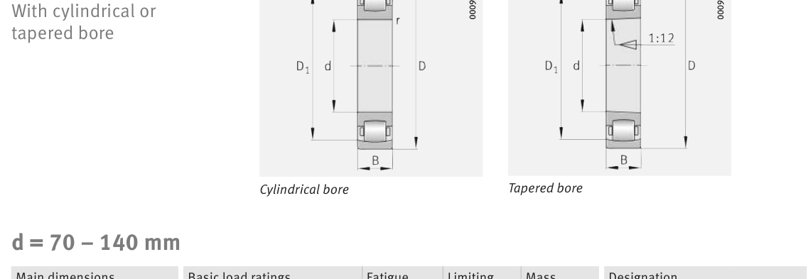

Original catalogue drawing - FAG Schaeffler HR 1, page 656

Scanned from the manufacturer catalogue page listing this part number. All part numbers printed on that table share the same drawing.
Scale cross-section
Blue = inner / outer ring, yellow = rolling element. Drawn to scale from this part's own
dimensions for selection reference only - not a manufacturing or assembly drawing.
Dimension table (mm / inch)
Symbol
Dimension
mm
inch
d
Bore diameter
105
4.1339
D
Outside diameter
190
7.4803
B
Inner-ring / bearing width
36
1.4173
r
Chamfer (min)
2.1
0.0827
Notes
Weights are given in kg. Load ratings are shown in both the original catalogue units and the converted value (1 N = 0.2248 lbf). Data is provided for selection reference only - confirm against the latest official catalogue before ordering.
Main dimensions
Bore d (mm)
105
Outside dia. D (mm)
190
Width B (mm)
36
Inner-ring shoulder dia. D1 (mm)
169.2
Load ratings & speeds
Basic dynamic load rating Cr (lbs)
54853
Basic static load rating Cor (lbs)
70815
Basic dynamic load rating Cr (N)
244000
Basic static load rating C0r (N)
315000
Fatigue limit load Cur (N)
30000
Limiting speed nG (rpm)
3,850
Weight
Weight (kg)
4.74
Mounting dimensions (fillets / shoulders)
Housing fillet r max (mm)
2.1
Shaft shoulder da (mm)
117
Housing shoulder Da (mm)
178
Housing fillet ra max (mm)
2.1
Bearing life (ISO 281 basic rating life)
C / P
Equivalent load P (N)
L10 (106 rev)
L10h at 1,200 rpm
4
61,000
102
1,411
6
40,667
392
5,451
8
30,500
1,024
14,222
10
24,400
2,154
29,923
15
16,267
8,323
115,604
Basic rating life per ISO 281: L10 = (C/P)10/3 with C = 244,000 N. Hours = L10 x 106 / (60n). Life-modification factors for lubrication, contamination and temperature (aISO) are not included.
Source & traceability
Brand
FAG
Source catalogue
FAG / Schaeffler Rolling Bearings HR 1
Catalogue page
p.656 (dimensions)
Load ratings in newtons, fatigue limit load Cur, limiting speed nG and reference speed nB.
Send us the quantity you need and we will come back with price and
lead time, normally within 24 hours. Equivalent parts from other brands can be quoted at the same time.